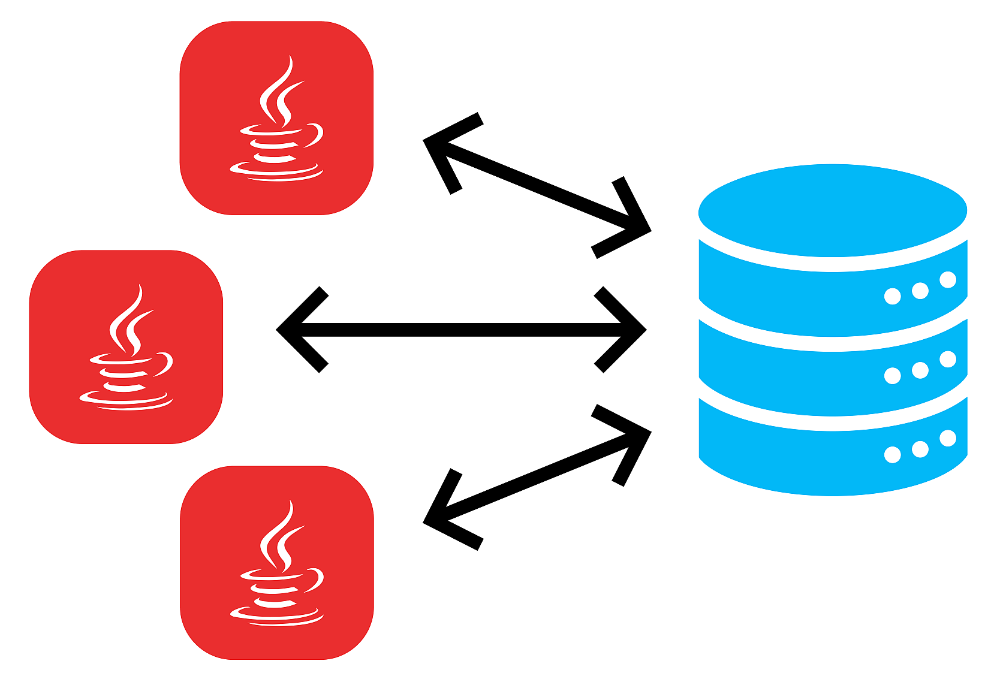

9.1 Introducción

Licencia

Este material está bajo una Licencia Creative Commons Atribución-Compartir-Igual 4.0 Internacional.
Derivado a partir de material de David Martínez Peña (https://github.com/martinezpenya).
Hoy en día, la mayoría de aplicaciones informáticas necesitan almacenar y gestionar gran cantidad de datos.
Esos datos, se suelen guardar en bases de datos relacionales, ya que éstas son las más extendidas actualmente.
Las bases de datos relacionales permiten organizar los datos en tablas y esas tablas y datos se relacionan mediante campos clave. Además se trabaja con el lenguaje estándar conocido como SQL, para poder realizar las consultas que deseemos a la base de datos.
Una base de datos relacional se puede definir de una manera simple como aquella que presenta la información en tablas con filas y columnas.
Una tabla es una serie de filas y columnas , en la que cada fila es un registro y cada columna es un campo. Un campo representa un dato de los elementos almacenados en la tabla (NSS, nombre, etc.). Cada registro representa un elemento de la tabla (el equipo Real Madrid, el equipo Real Murcia, etc.)
No se permite que pueda aparecer dos o más veces el mismo registro, por lo que uno o más campos de la tabla forman lo que se conoce como clave primaria (atributo que se elige como identificador en una tabla, de manera que no haya dos registros iguales, sino que se diferencien al menos en esa clave. Por ejemplo, en el caso de una tabla que guarda datos de personas, el número de la seguridad social, podría elegirse como clave primaria, pues sabemos que aunque haya dos personas llamadas, por ejemplo, Juan Pérez Pérez, estamos seguros de que su número de seguridad social será distinto).
El sistema gestor de bases de datos, en inglés conocido como: Database Management System (DBMS) , gestiona el modo en que los datos se almacenan, mantienen y recuperan.
En el caso de una base de datos relacional, el sistema gestor de base de datos se denomina: Relational Database Management System (RDBMS).
Tradicionalmente, la programación de bases de datos ha sido como una Torre de Babel: gran cantidad de productos de bases de datos en el mercado, y cada uno “hablando” en su lenguaje privado con las aplicaciones.
Java, mediante JDBC ( Java Database Connectivity, API que permite la ejecución de operaciones sobre bases de datos desde el lenguaje de programación Java, independientemente del sistema operativo donde se ejecute o de la base de datos a la cual se accede), permite simplificar el acceso a base de datos , proporcionando un lenguaje mediante el cual las aplicaciones pueden comunicarse con motores de bases de datos. Sun desarrolló este API para el acceso a bases de datos, con tres objetivos principales en mente:
- Ser un API con soporte de SQL: poder construir sentencias SQL e insertarlas dentro de llamadas al API de Java,
- Aprovechar la experiencia de los APIs de bases de datos existentes,
- Ser sencillo.
Conexión a las BBDD: conectores
Dejemos de momento de lado el desfase Objeto-Relacional y centrémonos ahora en el acceso a Base de Datos Relacionales desde los lenguajes de programación. Lo razonaremos en general y lo aplicaremos a Java.
Desde la década de los 80 que existen a pleno rendimiento las bases de datos relacionales. Casi todos los Sistemas Gestores de Bases de Datos (excepto los más pequeños como Access o Base de LibreOffice) utilizan la arquitectura cliente-servidor. Esto significa que hay un ordenador central donde está instalado el Sistema Gestor de Bases de Datos Relacional que actúa como servidor, y habrá muchos clientes que se conectarán al servidor haciendo peticiones sobre la Base de Datos.
Los Sistemas Gestores de Bases de Datos inicialmente disponían de lenguajes de programación propios para poder hacer los accesos desde los clientes. Era muy consistente, pero a base de ser muy poco operativo:
- La empresa desarrolladora del SGBD debían mantener un lenguaje de programación, que resultaba necesariamente muy costoso, si no querían que quedara desfasado.
- Las empresas usuarias del SGBD, que se conectaban como clientes, se encontraban muy ligadas al servidor para tener que utilizar el lenguaje de programación para acceder al servidor, lo que no siempre se ajustaba a sus necesidades. Además, el plantearse cambiar de servidor, significaba que había que rehacer todos los programas, y por tanto una tarea de muchísima envergadura.
Para poder ser más operativos, había que desvincular los lenguajes de programación de los Sistemas Gestores de Bases de Datos utilizando unos estándares de conexión.